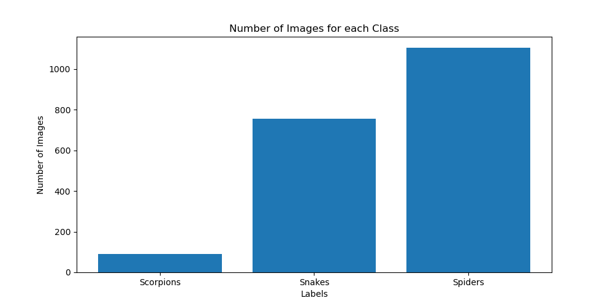

if you are in Windows, you can download DataTime from GitHub as ZIP file by clicking here.
then open you command line and type :
cd DataTime-master
if you are in in Linux/MacOS or you have already install git in Windows
git clone https://github.com/aymanabid10/DataTime.git
then browse into DataTime directory via :
cd DataTime
we suggest you have already a Virtual environnement if you don't, you can use Anaconda or Virtualenv library :
conda create -n < your-Virtual-env-name > conda activate < your-Virtual-env-name >
sudo pip install virtualenv python -m venv < your-Virtual-env-name > source < your-Virtual-env-name >/bin/activate
and Finally you have to install DataTime :
pip install .
Congratulations you have already install DataTime !!
image classification is one of thee most commun computer vision tasks in Machine Learning but the problem is Finding a great image dataset with the best resolution and the shape of the object in the image can be smaller than the actual image that can't give us a great Detection with a lower accuracy.
DataTime is capable of fixing this problem using the GoogleAPI Open Images used for object detection ,so DataTime takes all these images of the object detection and extract all the bounding boxes by crop them to create a powerfull image classification dataset but not only that, DataTime is capable of generating what ever your number data is, DataTime have the power to balance your number of of samples to make a powerfull Machine Learning or Deep Learning Task and finally your data will BackUp on files that makes your time valuable during the reload of your training script.
In order to Extract the Dataset, we have to look at the class that we use to, the class is found at the ClassificationGen directory with a python script called Generator.py, the class name called DataImageGenerator this class takes the path of the dataset downloaded from the GoogleAPI OpenImages as you can see here:
#Generator.py class DataImageGenerator() : def __init__(self, path:str): ...
But Generator script is used from another script called Extract.py from the Custom directory and uses a class called ExtractDataImages, as you can see here the arguments of the class :
class ExtractDataImages(DataImageGenerator): def __init__(self, path:str, NewSize:tuple, Save:bool, output="Output", display=False): super.__init__(path) ...
display arg is choice to display your data distribution before and after the balance process by setting it to True either False.
In order to save time, NewSize arg takes a tuple with a length of 2 that helps the Developer to resize the images generated to compatible input size of the pre-trained Model for example (64,64) for each image.
Developer have the choice to save the dataset using the arg Save by setting it to True either False.
the saved data of the arg Save generated as default in a directory called "Output" you can change it using the arg output.
the Folder tree of project or the data tree:
and this is the method to call the DataTime datasets Extractor:
#training.py from DataTime.Custom.Extract import ExtractDataImages Extractor = ExtractDataImages(path="data", NewSize=(64,64), Save=False, display=True)
and now you have to call myCustomData method to that returned 3 arrays :
Images, LabelsNames, LabelsEncoded = Extractor.myCustomData()
So the Output of the Extraction Process be like :
Images array contains the generated datasets of diffrents classes after all the process of DataTime (balance process, cropping, ...), Images is used as the X array in training process .
LabelsNames contains the class names of each image on the Images array, you can use it as the Y in the training process
LabelsEncoded array help the Developer to save time that spends on encoding the labels names, so we can use the LabelsEncoded as the Y array in the training process.
After Runnig the DataTime Extractor, the library generates 3 pickle files for the Data Encryption and a JSON file :
BackupData.p contains all the images Extracted.
Labels.p contains all the class names of all the images. For example :
["ClassName0", "ClassName0", "ClassName0", ..., "ClassName1", "ClassName1", "ClassName1", .., "ClassNameX", "ClassNameX", "ClassNameX"].
ClassNames.p contains only the ClassNames. For Example : ["ClassName0", "ClassName1", .., "ClassNameX"].
Labels.json contains :
{
"NoOfClasses": X, // Number of Classes "X"
"TotalImages": X, //Number of Total images Extracted using DataTime after all the process
"TotalLabelsList": X //Number of Total of Labels names
}
You can access of these values via :
# Number of Classes : NoOfClasses = Extractor.dataTypeInformations["NoOfClasses"] # Number of the total images : TotalImages = Extractor.dataTypeInformations["TotalImages"] # Number of total labels : TotalLabelsList = Extractor.dataTypeInformations["TotalLabelsList"] # Labels List : Labels = Extractor.LabelsExtracted["Labels"] # Labels List : LabelsEncoded = Extractor.LabelsExtracted["LabelsEncoded"]
When you rerun the program, this is the backup interface looks like :
we are are going to take a look at the classification process using DataTime and without , our example building 2 image classifiers models using Tensorflow with the same model architecture but with diffrents datasets
our Dataset based on some dangerous animals, this dataset include 3 types of these animals which are [Spiders, Snakes, Scorpions]
our Data Distrubution is :
With the full number of samples equal to 3047 images.
These images are very large because the largest format is 1024x1024 pixels or maybe more, it depeends on your selection from the OpenImages Datasets.
These large formats makes a big problems during the preprocessing of the images so when we resize them to input shape recommended by model architecture, the images becomes too blurry
and this a big problem. We tested a model with an input shape 64x64 and as a final results the model gives about 37% of accuracy and this
The results are expected because our data is unbalanced and these animals are too small in the image and become very blurry.
Now we can apply the DataTime Extractor on this dataset and this are the results :
Figure n°1 represant the full number of images Extracted from the first dataset which equal to 3,548 new samples but our data unbalanced specifically on the Scorpions data
so DataTime can fix that using the balance methods and as you can see the red line is level where DataTime stops rendering the data.
In this case DataTime generated a balance value which equal to 1205 for each Label.
Finally, we are tested an image classification model with the new data and gives as accuracy about 75% and this is expected because Machine Learning & Deep Learning requires a large DataSets for the training process but it's still
a good results on this new DataSet generated by DataTime.
Data Collection also is one of the most important things in Machine Learning & Deep Learning tasks, so we can fix that problem with DataTime using an interactive and dynamic dashboard which i developed and you can call it with an built-in CLI command called DataDash that takes few arguments.
DataDash include the camera feed, images collected paths and names and a Data visualizer based on your own Data collected
DataDash collect images with a variable ROI with a shape set up by the Developer with an argument on CLI and save only the ROI part on the path Selected.
DataDash put your collected data on a Real-Time bar visualizer that you can check your Data Distrubution
DataDash is a Flask and OpenCv DashBoard based, you can launch it by typing on the Command Line :
DataDash --help
To run DataDash, type Collector as default arg :
DataDash Collector
DataDash takes as input the path of your saved Data as you can see here :
But if you path is not Valid, Don't worry because DataDash will generate it automatically
DataDash takes 2 other optional args, the first one is --camera_index to change the camera index, this index
is 0 as default
The second arg is --window_size that allow you chnage the ROI size, the ROI size is
200 as default which means, you ROI shape is 200x200
Usage:
DataDash--camera_index 0 --window_size 200
Output :
DataDash--camera_index 0 --window_size 400
Output :
DataDash makes you Collected Data on a real-time graph as Bar graph, as you can see here :